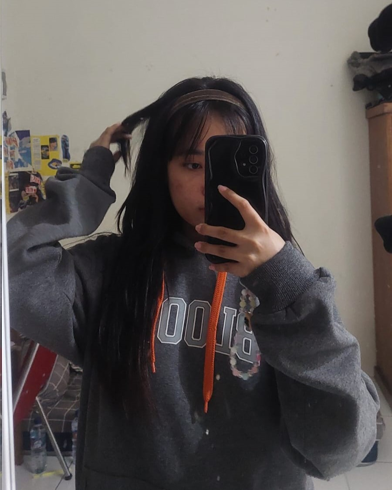
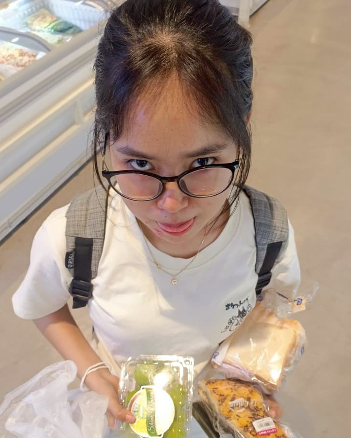
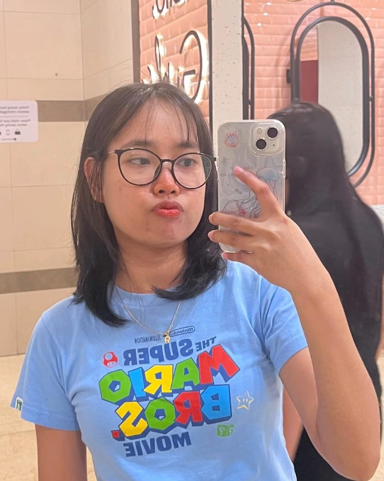

Satu tahun berlalu, dan aku masih ingat saat mataku terpana oleh pesonamu saat pertama kali melihatmu. Detik itu adalah momen yang terukir indah dalam ingatanku, tak pernah pudar.
 A Man who keeps his feelings hidden, watching you from a kind distance. Mencari apa yang kamu sukai, berharap suatu hari aku bisa mendekatimu. Setiap langkah kecil membutuhkan keberanian.
 Perasaan yang tumbuh semakin kuat setiap kali bertemu. Perasaan yang tidak bohong ini mendorongku untuk berani berbicara denganmu, and i hope to hear your voice more often.
 Finally, I gathered the courage to confess my feelings. You are my first love (yes You are!). You are my first in everything that happens to me, aku selalu bahagia di setiap moment yang kita lalui bersama. Thank you for being by my side.
I hope our love will continue to bloom like a flowers. May our relationship always be filled with happiness and warmth, seperti mekarnya bunga sakura di musim semi.
I love You Angel always.